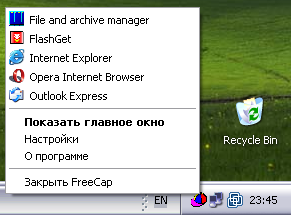

| Вся процедура настройки программы FreeCap состоит из двух этапов -- добавления приложения подлежащего соксификации и настройки прокси |
| После окончания настройки вы можете запустить программу |
| Либо двойным щелчком мыши из главного окна FreeCap-а |
 |
| либо из контекстного меню: |
|  |
| В самой программе ничего перенастраивать не нужно. FreeCap позаботится о том, чтобы программа даже и не подозревала что ходит через прокси |